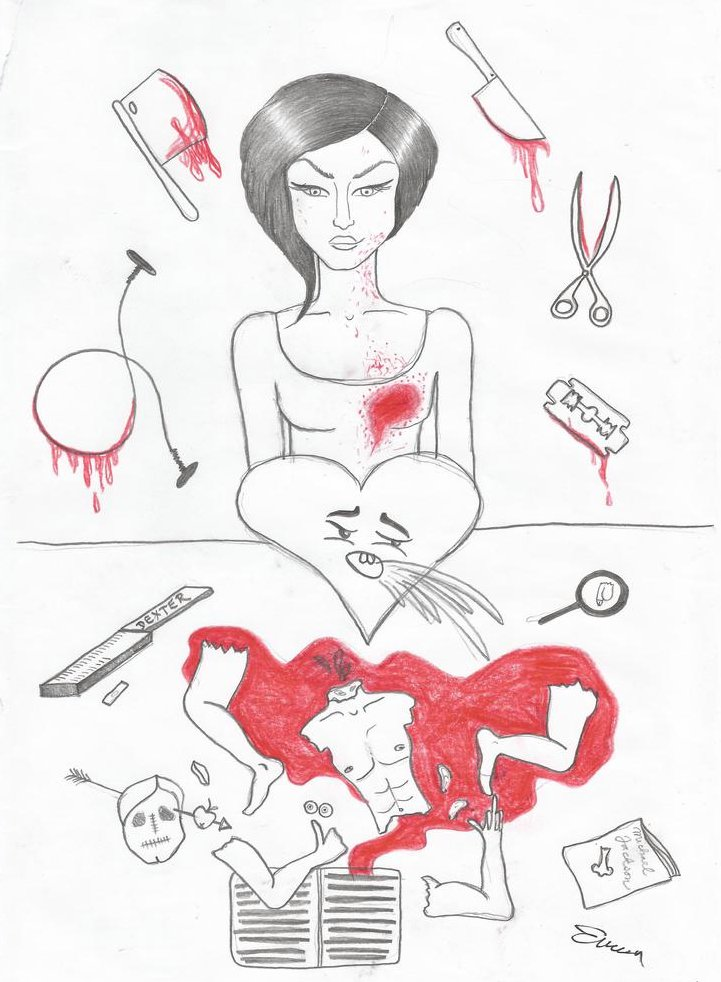

« předchozí článek | obsah čísla | následující článek »
„Když ty jsi taková… Všechno řešíš otevřeně a to já neumím…“
To byla tvá poslední slova. S těmi na rtech jsi odešel. Měl jsi pravdu. Výjimečně. Od chvíle, co jsme se poznali, jsem tě chtěla. Líbilo se mi na tobě všechno. Tvoje nešikovnost, neschopnost flirtovat, nervozita v mé přítomnosti hraničící s posvátnou hrůzou, neboť jsem žena. Dobrý postřeh, miláčku, vskutku jsem žena. Mám vše, co k ženě patří, a ještě nějaký zdroj vybuchující energie z neznámého zdroje, který mi občas velí vzít chlapa za vlasy a odtáhnout do postele.
Změnila jsem tě? Asi ano. Býval jsi vyděšený kluk. Vedle mě se z tebe stal chlap. Učila jsem tě, že svět je ošklivý a musíš bojovat, aby ses v něm neztratil. Udělala jsem z tebe silného ambiciózního muže. Tak silného, že jsi měl sílu mě opustit.
Myslím, že byl problém v tom, že jsem na tebe byla moc hodná. Ty sis toho nevážil. Řekni, kde bys našel takovou, jako jsem já? Tak třeba ta tvá nešikovnost v sexu. Na začátku byl tvůj výkon (lze-li to vůbec nazvat výkonem) jednoduše tristní. Netušil jsi, co máš dělat s tím, co ti Bůh nadělil do kalhot. On se taky nepředal, že? Já měla svatou trpělivost. Postupně jsi nabyl trochu sebevědomí. Nikdy jsem nepředvedla tolik hereckých etud jako při předstírání orgasmů.
Přesto všechno jsem tě neopustila. Jednou jsem si tě vybrala a milovala tě. To nejde vzít zpět. Milovala jsem tě celým svým srdcem a celou svou duší. Tak to má být. Proto jsem tě nemohla nechat odejít. Láska se ze všeho nejvíc blíží nenávisti. Ta má výbušná energie se proměnila v destruktivní sílu a velela ničit zdroj mé bolesti. Rozmetat na kousky toho, kdo mi tak ublížil. Neměla jsem na výběr. Stál jsi tam s tím svým kufříkem na kolečkách a mluvil jsi o tom, že už mě nemiluješ, že to asi byla chyba…
Co byla chyba? Náš život? Naše láska? Kdy tě to napadlo? Máš jinou? V hlavě jsem měla tisíc otázek, které se slovy, které ti proudily z krásných úst, pomalu splynuly v jednu černou tmu. Nic jsem neviděla, jen cítila. Cítila jsem vztek. Obrovský vztek. Moje ruka nejednala na můj pokyn. Jednala za mě. Psychické a fyzické já se spojilo v jediném pohybu, který jsem v krátkém časovém intervalu opakovala. Nejdříve jsem si neuvědomila následky. Docela mě to bavilo. Pak jsem se vyděsila. Řekla jsem ti, že mě mrzí, že jsem ušpinila dlaždice, a že to uklidím. Ty už jsi tam nebyl. Byla tam jen politováníhodná hromádka něčeho, co dříve byl živý člověk. Nechápala jsem, že ty končetiny, hlava a krev, všechny ty součástky bez hlubšího smyslu, mohly někdy tvořit tebe. Přišlo mi docela legrační, že jsi mluvil o mé otevřenosti vůči světu, která tě ničí, a já teď otevřela tvoje tělo. Doslova. Myslela jsem si, že odněkud přijdeš a společně se tomu oba zasmějeme. Nepřipadá ti legrační, že tě tenhle kus masa připomíná?
Už asi nepřijdeš. Uvařila jsem si kávu a uvažuji, co udělám s tvým tělem. Nemám nejmenší chuť strávit zbytek života v kriminálu. Musím se zbavit těla. Asi je to ode mě trochu sobecký postoj, ale neměl jsi mě chtít opustit. Nakonec jsi ale dosáhl svého, viď? Jsme od sebe odloučení… Do konce života určitě. Tedy teď to znamená do konce mého života…
Nechápala jsem, že ty končetiny, hlava a krev, všechny ty součástky bez hlubšího smyslu, mohly někdy tvořit tebe.
